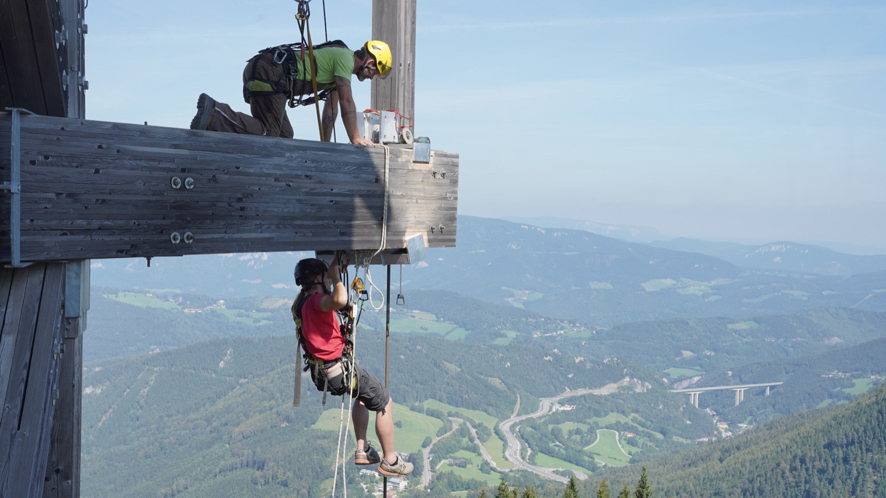
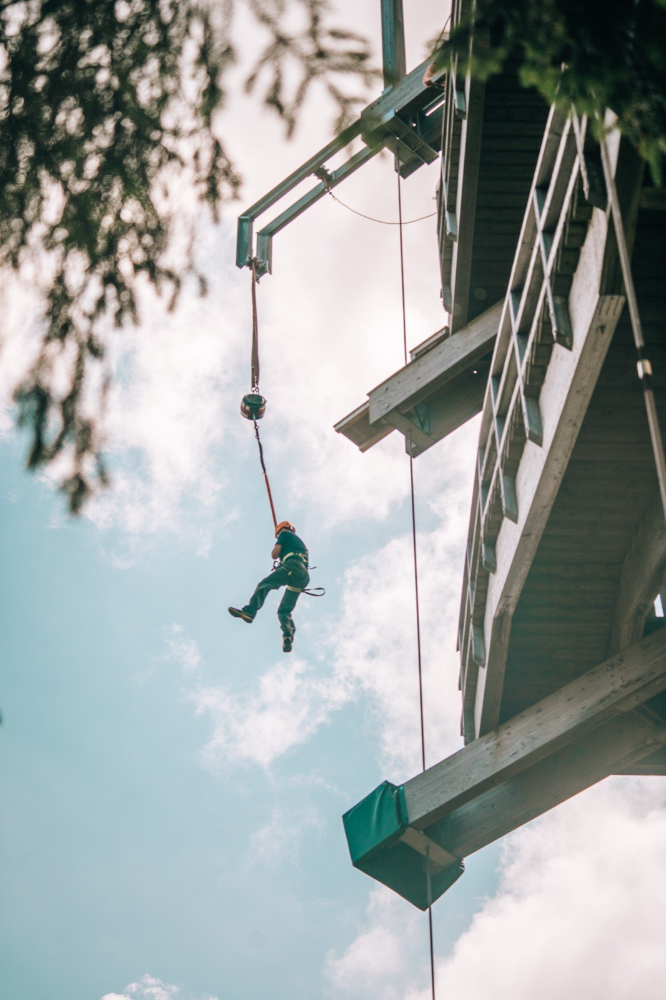
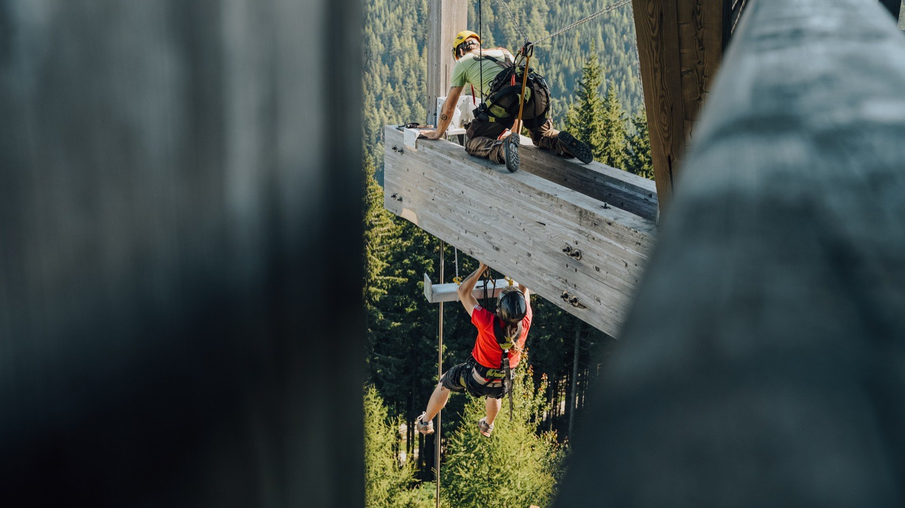
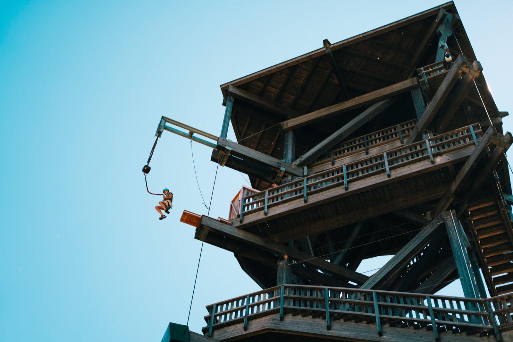
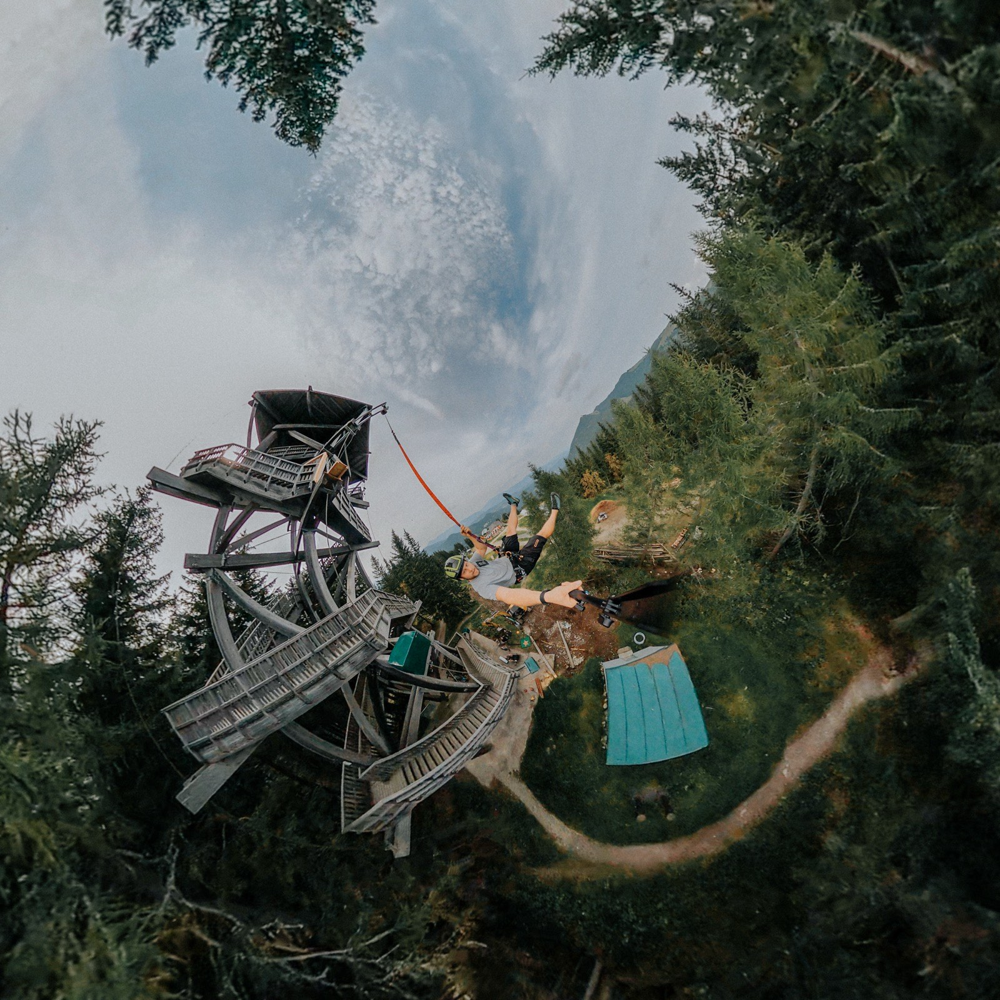
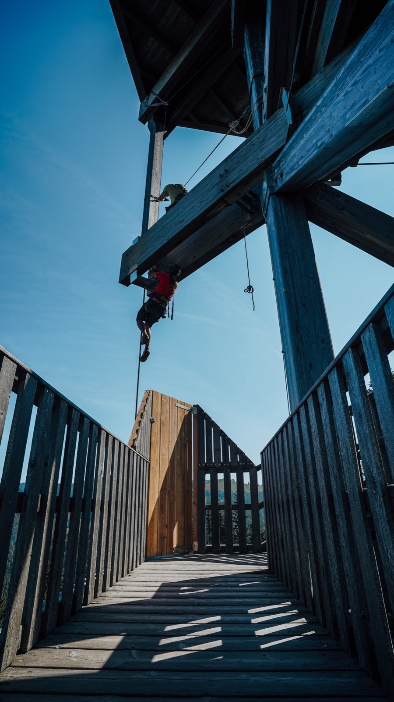

Millennium JumpMillennium Jump
Freier Fall vom 25 m hohen Millennium-Turm — Adrenalin pur, sichere Landung, Profi-Betreuung.Free fall from the 25 m Millenniumswarte tower — pure adrenaline, safe landing, professional supervision.
Die Anatomie des SprungsThe anatomy of the jump
Tarife & KombisFares & combos
Sprung — Bergfahrt separatJump — ride up separate
Ein Sprung vom Turm; nur der Sprung ist enthalten. Die Bergfahrt (Kabinenbahn) ist separat zu lösen.One jump from the tower; only the jump is included. The ride up (cable car) is a separate ticket.
Jump & Ride
Sprung plus eine Mountaincart-Abfahrt — Adrenalin doppelt.Jump plus one mountain-cart run — double the adrenaline.
Unter 18 nur mit Einverständniserklärung. Bei starkem Betrieb feste Sprungzeiten: 10:00, 12:00, 14:00, 15:50.Under 18 only with parental consent. At busy times fixed jump slots: 10:00, 12:00, 14:00, 15:50.
Der Sprung in BildernThe jump in pictures






Der freie Fall am Sprungturm — hautnah.The free fall from the jump tower — up close.
Gut zu wissenGood to know
Der SprungThe jump
VoraussetzungenRequirements
Sprung-ZeitenJump times
Millenniumswarte — die AussichtMillenniumswarte — the view
Passt gut dazuGoes well with
Dein Schlüssel zum Gipfel: Spielplatz, Goldwaschen, Streichelzoo, Aussicht & Events — plus Waldseilgarten & Mountaincart-Abfahrt. 55 € statt einzeln 87 € (Erw.) · Kinder ab 28 €.Your key to the summit: playground, gold panning, petting zoo, views & events — plus ropes park & mountain-cart run. €55 instead of €87 separately (adults) · kids from €28.
Diese Aktivität schon im Paket — Berg, Ticket & ÜbernachtungThis activity already bundled — mountain, ticket & stay


Häufige FragenFrequent questions
Alle FAQs für Sommer & Winter →All FAQs for summer & winter →
Wohin als Nächstes?Where to next?